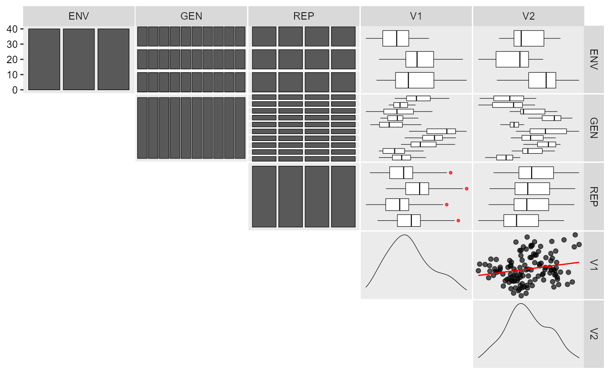
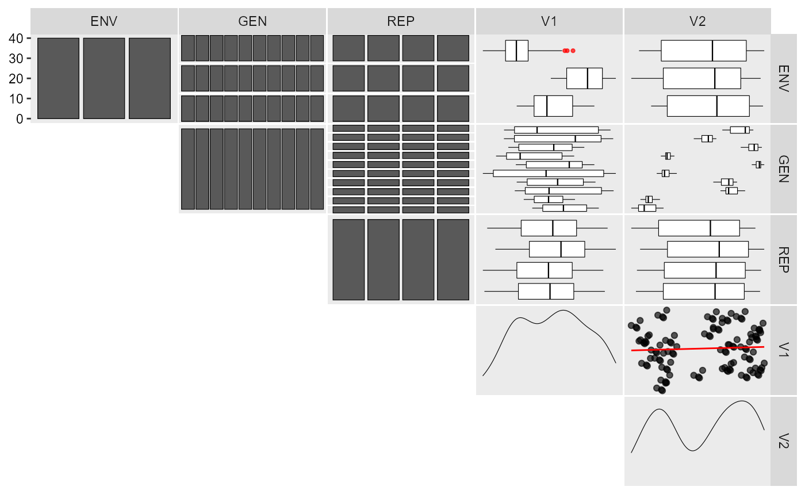

Simulate genotype-environment data given a desired number of genotypes, environments and effects.
ge_simula( ngen, nenv, nrep, nvars = 1, gen_eff = 20, env_eff = 15, rep_eff = 5, ge_eff = 10, intercept = 100, seed = NULL )
| ngen | The number of genotypes. |
|---|---|
| nenv | The number of environments. |
| nrep | The number of replications. |
| nvars | The number of traits. |
| gen_eff | The genotype effect. |
| env_eff | The environment effect |
| rep_eff | The replication effect |
| ge_eff | The genotype-environment interaction effect. |
| intercept | The intercept. |
| seed | The seed. |
A data frame with the simulated traits
Genotype, environment and genotype-environment interaction effects are
sampled from an uniform distribution. For example, given 10 genotypes, and
gen_eff = 30, the genotype effects will be sampled as runif(10, min = -30, max = 30). Use the argument seed to ensure reproducibility. If more than
one trait is used (nvars > 1), the effects and seed can be passed as a
numeric vector. Single numeric values will be recycled with a warning when
more than one trait is used.
Tiago Olivoto tiagoolivoto@gmail.com
#> Warning: 'gen_eff = 20' recycled for all the 2 traits.#> Warning: 'env_eff = 15' recycled for all the 2 traits.#> Warning: 'rep_eff = 5' recycled for all the 2 traits.#> Warning: 'ge_eff = 10' recycled for all the 2 traits.#> Warning: 'intercept = 100' recycled for all the 2 traits.#> # A tibble: 5 x 9 #> Variable Class Missing Levels Valid_n Min Median Max Outlier #> <chr> <chr> <chr> <chr> <int> <dbl> <dbl> <dbl> <dbl> #> 1 ENV factor No 3 120 NA NA NA NA #> 2 GEN factor No 10 120 NA NA NA NA #> 3 REP factor No 4 120 NA NA NA NA #> 4 V1 numeric No - 120 75.5 93.7 120. 0 #> 5 V2 numeric No - 120 78.9 107. 139. 0#># Change genotype effect (trait 1 with fewer differences among genotypes) # Define different intercepts for the two traits df2 <- ge_simula(ngen = 10, nenv = 3, nrep = 4, nvars = 2, gen_eff = c(1, 50), intercept = c(80, 1500))#> Warning: 'env_eff = 15' recycled for all the 2 traits.#> Warning: 'rep_eff = 5' recycled for all the 2 traits.#> Warning: 'ge_eff = 10' recycled for all the 2 traits.#> # A tibble: 5 x 9 #> Variable Class Missing Levels Valid_n Min Median Max Outlier #> <chr> <chr> <chr> <chr> <int> <dbl> <dbl> <dbl> <dbl> #> 1 ENV factor No 3 120 NA NA NA NA #> 2 GEN factor No 10 120 NA NA NA NA #> 3 REP factor No 4 120 NA NA NA NA #> 4 V1 numeric No - 120 51.8 69.9 85.2 0 #> 5 V2 numeric No - 120 1435. 1501. 1540. 0#># }